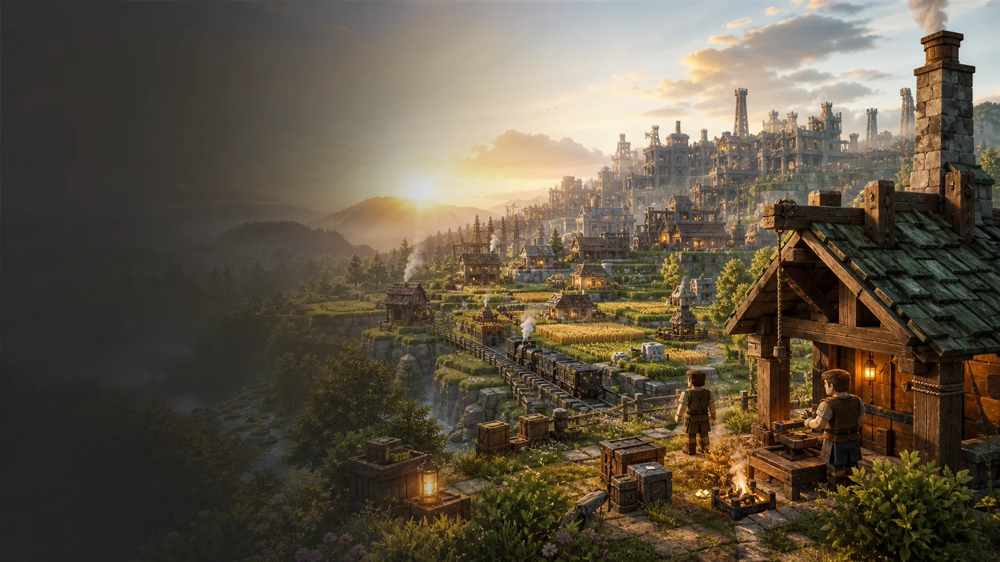
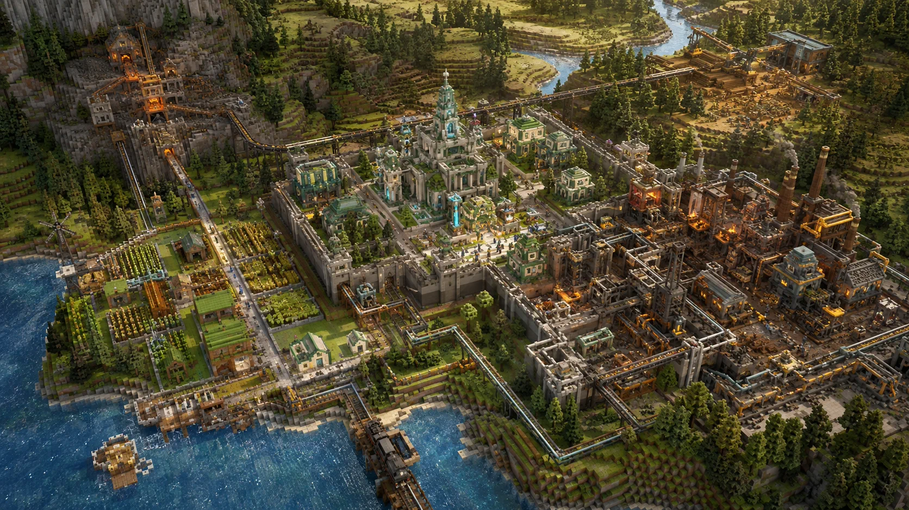
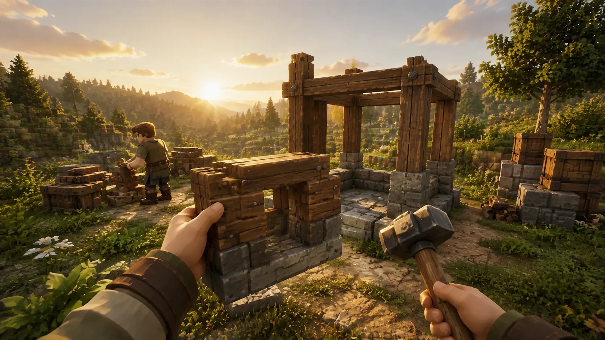
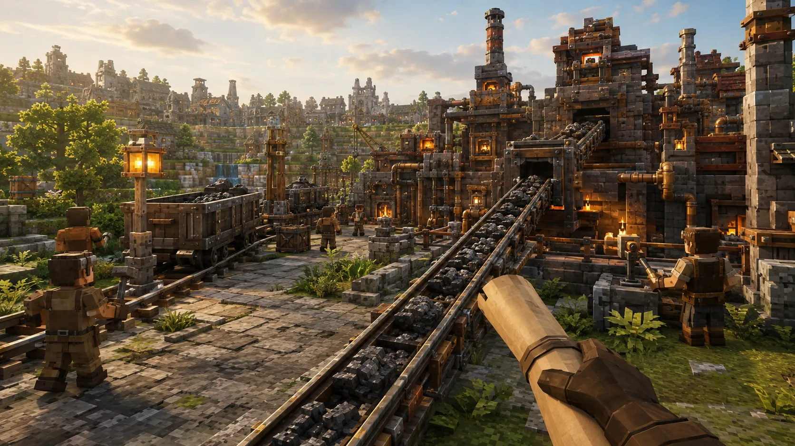
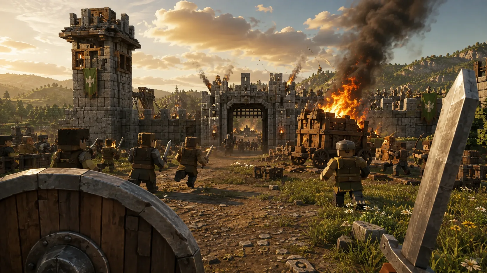
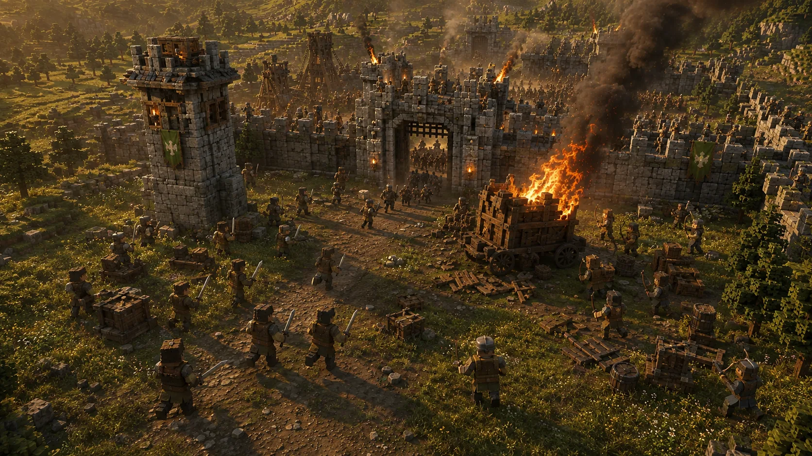
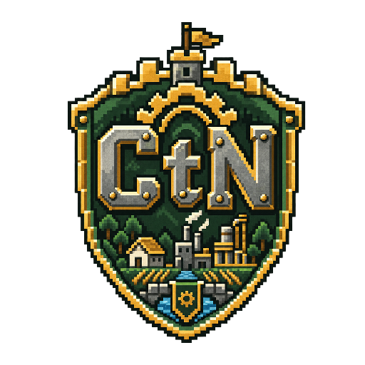

Survive · Craft · Automate · Lead
Del primer bloque a una nación viva
Comienza con un refugio en un mundo hostil y conviértelo en una nación industrial viva, construida desde cerca y dirigida desde las alturas.
Conoce la visión Quiero ayudar

De sobreviviente a líder de una nación
Craft to Nation une la supervivencia en primera persona con la planificación estratégica. Diseña edificios, organiza distritos y dirige una economía que transforma recursos en una metrópolis preparada para crecer y defenderse.

El viaje del jugador
- Sobrevive. Reúne recursos, fabrica herramientas y levanta tu primer refugio.
- Funda. Valida viviendas, atrae colonos y crea el núcleo de tu ciudad.
- Automatiza. Conecta puestos, industrias y almacenes para que la ciudad trabaje contigo.
- Lidera. Alterna entre la acción directa y la estrategia para proteger y expandir tu civilización.
Primera persona
Vive la ciudad desde dentro
Construye con tus manos, recorre las cadenas que diseñaste y lucha junto a quienes habitan tu ciudad.



Dos perspectivas
La misma batalla. Dos formas de liderar.
Dirige la defensa desde las alturas y baja al terreno cuando tu ciudad te necesite. Mueve el control para cambiar de perspectiva.

Primera persona Vista cenitalUna ciudad que responde a tus decisiones
- Cámara dual: primera persona para construir y combatir, vista cenital para planear y ordenar.
- Planos de construcción: convierte tus construcciones validadas en plantillas reutilizables.
- Población viva: cada ciudadano trabaja, consume alimentos y aporta a la ciudad.
- Logística: carreteras, trenes, cintas y tuberías conectan recursos, fábricas y defensas.
- Combate táctico: dirige tropas, protege puestos periféricos y responde a asedios.
- Multijugador: lleva núcleos y planos de construcción a partidas en red local equilibradas.
Estado del desarrollo
La visión muestra hacia dónde va el juego; este es su avance verificable hoy.
- Fase 0 · Lógica pura
- Completado. Motor de recursos y demografía, archivos de planos y validación de plantillas con pruebas unitarias.
- Fase 1 · Prototipo visual mínimo
- Verificado. El prototipo funciona en Godot 4.7: permite caminar, minar, colocar bloques y declarar edificios. Sus ocho pruebas automáticas y la interacción manual fueron comprobadas.
- Fase 2 · Ciudad y demografía visibles
- Planeado. Interfaz de comida, moral y nivel urbano, zonificación y colonos básicos.
- Fase 3 · Cámara dual y selección de tropas
- Planeado. Cambio de cámaras, selección y comando híbrido.
- Fase 4 · Logística, rutas y movimiento de ciudadanos
- Planeado. Navegación, cintas transportadoras y tuberías.
- Fase 5 · Combate, asedios e IA
- Planeado. Defensa, asedios y sucesión de avatar.
- Fase 6 · Multijugador en red local
- Planeado. Estado sincronizado, núcleos portátiles y planos reutilizables.
Formas de ayudar
- Difusión: comparte Craft to Nation con personas que disfruten construir, sobrevivir o planear.
- Retroalimentación y pruebas: aporta ideas y prueba las versiones que estén disponibles.
- Programación: colabora en los sistemas que harán crecer el prototipo.
- Financiación: ayuda a sostener tiempo de desarrollo, herramientas y recursos.
